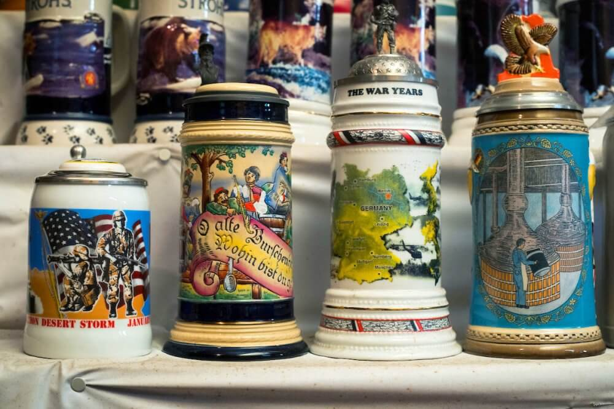

Американский коллекционер собрал более 10 тысяч коллекционных пивных кружек с крышками. В гостях у Джорджа Адамса побывали журналисты сайта Atlas Obscura.

Обзоры
Американский коллекционер собрал более 10 тысяч коллекционных пивных кружек с крышками. В гостях у Джорджа Адамса побывали журналисты сайта Atlas Obscura.
Негазированное пиво даёт производителям новые возможности, но клиенты не спешат его покупать. Об этом пишет журналист Джошуа М. Бернстайн на сайте SevenFifty Daily.
Первый фестиваль крафтовых пивоварен, принадлежащих афроамериканцам, прошёл в Питтсбурге 11 августа. Участниками Fresh Fest 2018 стали более трёх десятков пивоварен.